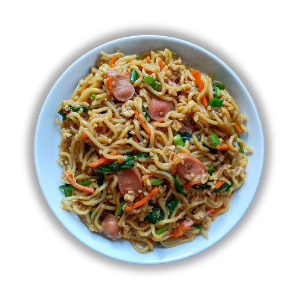

Beranda
Tentang Kami
Resep
Mie Goreng

Bahan dan Alat:
Mie
Sawi
Bumbu Halus
Minyak Goreng
Wajan
Spatula
Cara Membuat:
Masukkan sawi, mie, bumbu halus, dan minyak goreng ke dalam wajan atau pawet yang sudah disediakan.
Masukkan wajan atau pawet tersebut ke dalam penggorengan untuk digoreng.
Goreng mie hingga matang dan berwarna krem.
Angkat mie goreng dan sawi dari penggorengan.
Masukkan wajan atau pawet ke dalam wajan atau pawet yang sudah disediakan untuk memasak mie ayam.
Sajikan mie goreng dengan sawi.